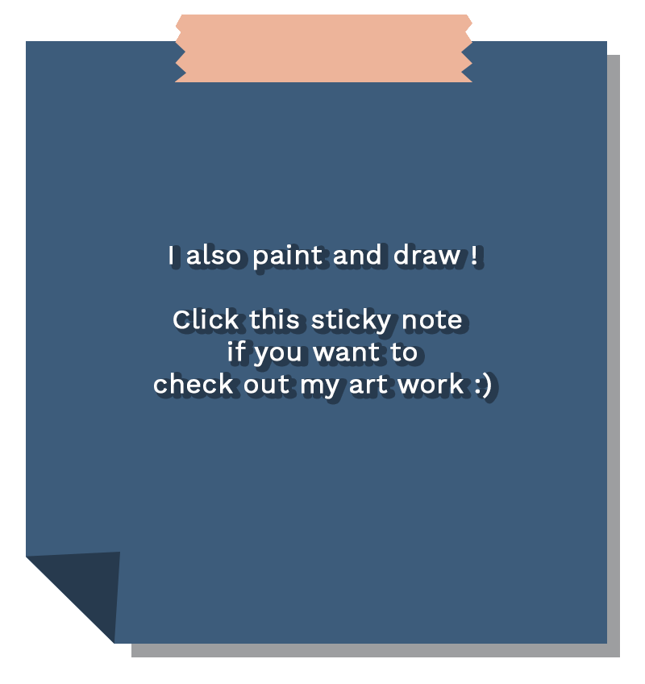

Hi, I'm Heejoo !
student + developer + chocolate lover
Let's keep in touch !


Currently working as
Cartoon Network
Games Quality Assurance
About me
Curious Second-Year Computer Science Student at Georgia Tech
My current passion is Web Development, Augumented Reality, and UI • UX Design. I strive to strengthen my skills of advanced coding techniques as well as artistic skills.
Education
August 2017 – Present
Georgia Institute of Technology
Atlanta, Georgia
B.S. in Compuer Science
- Media & Intelligence
• Year: Sophomore
• GPA: 3.68 / 4.00
• Relevant courses:
Intro to Computing Using Python, Object–Oriented Programming, Data Structure & Algorithms
• Honors & Awards: Dean's List
Summer 2018
Yonsei University
Seoul, Korea
Summer Study Abroad Program
• GPA: 3.90 / 4.00
• Relevant courses:
General Psychology, Principles of Macroeconomics, International Economics
Feburary 2014 – December 2016
St Matthew's Collegiate School
Wellington, New Zealand
• GPA: 4.00 / 4.00
• Honors & Awards:
Valedictorian, The Duke of Edinburgh′s Hillary Silver Awards, NZ Choral Federation′s Regional Festival Cup
Experience

January 2019 – Present
Turner Brodcasting System
Cartoon Network Games
Atlanta, Georgia
Games Quality Assurance Intern
• Debugging and optimizing the performance of mobile games, apps and console games that reached 1,000,000+ users
• Identifying and documenting defects in a clear and concise manner on JIRA bug tracking database.
• Performing Compatibility, Functionality, Regression, Smoke and GUI testing and test documentation using TestRail.
• Ensuring that digital content quality meets standards for mass market consumption.
• Working directly with game developers and producers on creating a final product.
• Products: CN MatchLand, CN Arcade
August 2018 – Present
Undergraduate Researcher
Georgia Institute of Technology
Vertical Integrated Program
• Built AR experiences enhance a devised theatre process using Unity, Richo 360° camera, and C# scripting.
• Designed socially engaged AR storytelling for a theatre performance, "The Safty Show" in collaboration with DramaTech.
• Conducted user research on Viewpoints and Rasaboxes - techniques of
performance art for creating movements.
• Projects: Applied Theater with Emerging Media, The Safty Show
Project
Muny Pottery Studio – Women’s Web App Developement Workshop with HubSpot
» munystudio.herokuapp.com
•Created a website application using Heroku, HTML, CSS, Javascript, and node.js to market MUNY pottery studio.
•Implemented Google Maps API, Google Firebase API for finding direction and database storage.
•Integrated Google Analytics to analyze customer traffic and to continuously work on improving membership retention.
Involvement
Programming Skills
Java
Python
HTML, CSS, Javascript, JQuery, Node.jsC#
VPython
Tools
Unity, A-Frame
Adobe Photoshop, Adobe InDesign
Languages
English – Fluent
Korean – Native
German – Beginner
Japanese – Beginner
Fun Facts !
Copyright © 2019 Heejoo Jin. All rights reserved.